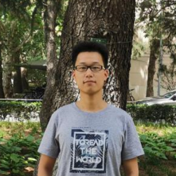

Shipeng Hu (胡世鹏)
About
I am a 5th-year PhD candidate at FastSys Lab, Department of Computer Science and Technology, Tsinghua University (清华大学).
Before that, I received my B.Eng. in Computer Science and Technology from Huazhong University of Science and Technology (华中科技大学) in 2021.
My research interest focuses on machine learning systems, particularly KV cache optimization for LLM serving.
I am currently seeking job opportunities in LLM infra.
Contact me at: hsp21@mails.tsinghua.edu.cn
Publications
-
Bidaw: Enhancing Key-Value Caching for Interactive LLM Serving via Bidirectional Computation–Storage Awareness
Shipeng Hu, Guangyan Zhang, Yuqi Zhou, Yaya Wei, Ziyan Zhong, Jike Chen.
24th USENIX Conference on File and Storage Technologies (FAST 2026).
-
Survey on KV Cache Compression for Large Language Model Inference
Shipeng Hu, Guangyan Zhang, Weimin Zheng.
Journal of Computer Research and Development (in Chinese), 2026.
-
FastCheck: Fast Checkpointing and Recovery for DNN Training via Parallel Transmission and Compression
Yun Teng, Dawei Sun, Shipeng Hu, Zhiyue Li, Guangyan Zhang, Haidong Tian, Rui Chang.
ENGINEERING Information Technology & Electronic Engineering, 2026.
Selected Awards
- Comprehensive Excellence Scholarship, 2023
- National Scholorship, 2019
- Outstanding Undergraduate Student, 2018 (Highest honor for undergraduates in HUST)